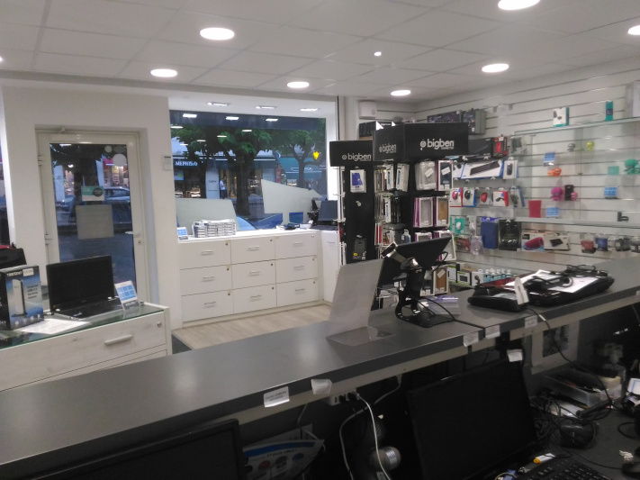

Les prises de décisions de JARVIS et premiers contact clients chez PSM Numerik's
12 août 2017
Lors de cette troisième semaine, Damien, qui s’occupe en partie des réparations mobiles et tablettes, revient de vacances,
nous sommes donc maintenant quatre dans le magasin.
Pour moi cette semaine est l’occasion de prendre des initiatives auprès des clients je vais commencer à essayer
de prendre en charge quelques clients et les renseigner du mieux que je peux. Pour quelqu’un de timide et
assez introverti comme moi, cette expérience me permet de me surpasser. J’essaye tout de même de demander
conseils à Angélique ou Lucas quand je ne sais pas quoi répondre à un client. Je commence également à répondre
au téléphone, chose que je faisais exclusivement quand aucun des deux n’étaient disponibles pour répondre
la semaine auparavant.
En conseillant les clients de plus en plus, il me faut également progresser rapidement sur JARVIS pour pouvoir
répondre à leurs attentes (créer des factures et des bons de commande par exemple) choses que je n’avais
que très peu fait la semaine d’avant. Je continue également à m’occuper des fiches de prise en charge pour
les téléphones portables et les ordinateurs. Je continue aussi à effectuer des rentrées en stock d’articles
comme des protections pour téléphones ou encore des téléphones portables.
Lucas me charge de préparer les envois usine pour les téléphones portables (SAV), j’avais déjà commencé
à le faire en fin de semaine mais je vais encore plus le faire cette semaine. Je dois entrer des informations
(informations clients et fiche technique du téléphone à envoyer) dans un autre logiciel utilisé uniquement
pour les envois usine et prépare le colis. Je vais donc effectuer cette opération avec une dizaine de clients
et de téléphone.

Je continue également à m’occuper de la propreté et de la bonne disposition du point de vente et des installations
et préparation d’ordinateurs portables et fixes vendus ou en réparation. J’assiste également Lucas sur les
réparations d’ordinateurs un peu plus poussées qu’une simple installation de Windows. D’autres techniciens
de LDLC ou d’un autre magasin Numerik’s viendront également nous aider pour certaines réparations ou pour
nous donner des pièces nécessaires.
Pour conclure, lors de cette semaine j’effectue toutes les tâches que je faisais déjà les semaines passées
mais plus intensément. Je commence également à avoir un contact beaucoup plus important avec les clients
que lors de la deuxième semaine. Par exemple, je ne leur demandais que quelques informations et ne faisais
pas de diagnostic. En ce qui concerne mes relations avec mes collègues, je pense m’être plutôt bien intégré
à l’équipe, en milieu de stage je m’entends très bien avec tous les membres de la boutique et même des
employés de LDLC Vienne que j’ai pu rendre visite quelques fois.